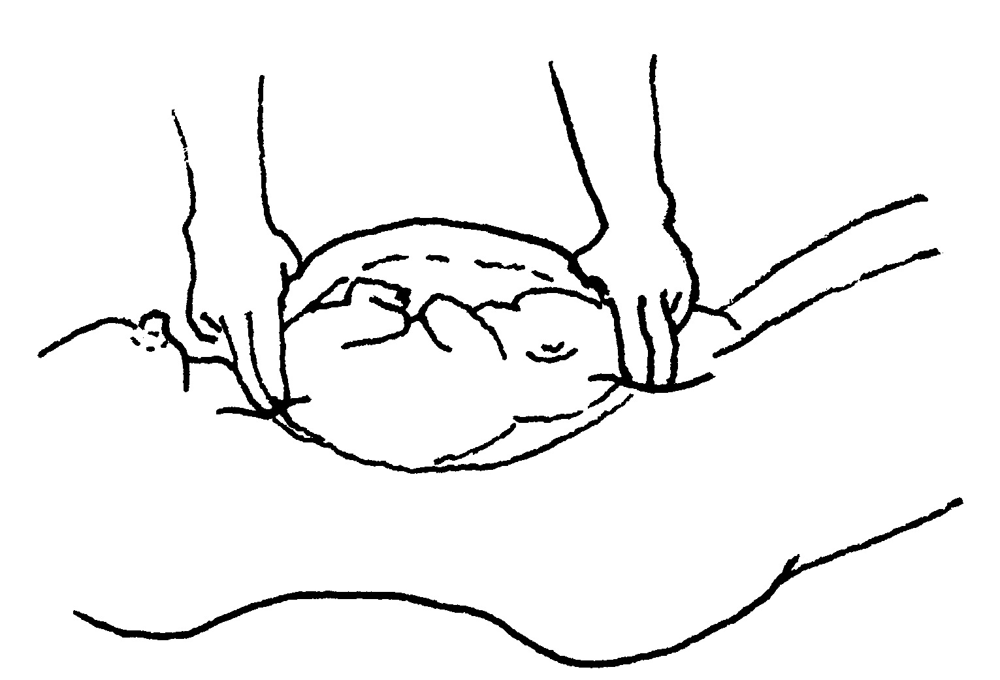

During pregnancy, it is common for a baby to change position several times in the womb. By the end of the pregnancy, the baby should be lying in the womb with its head down. This is the best position for birth. To make sure the baby is head down, feel for the head like this:
